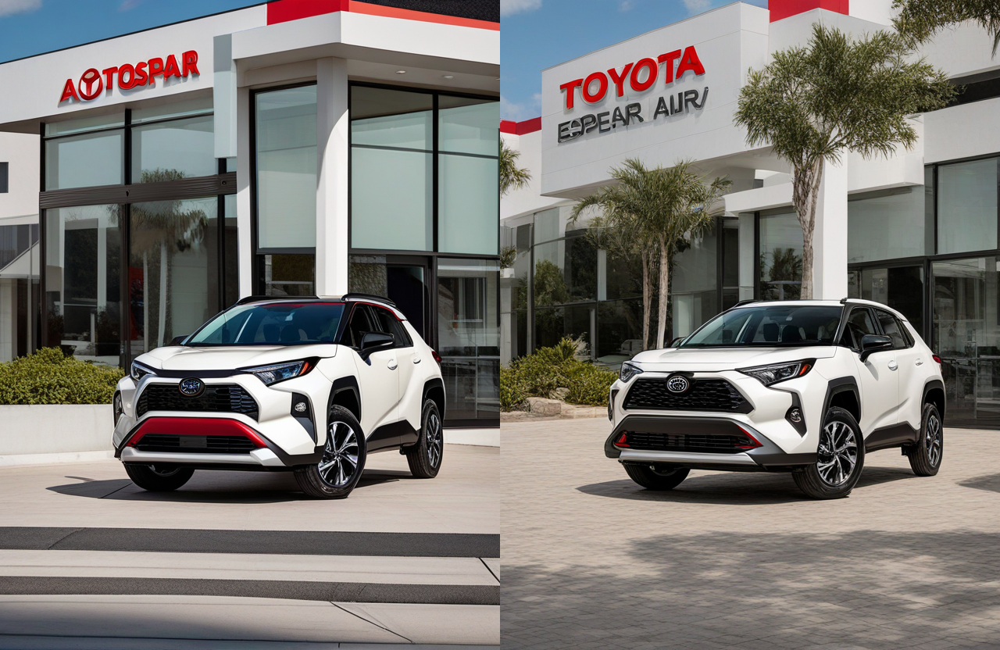
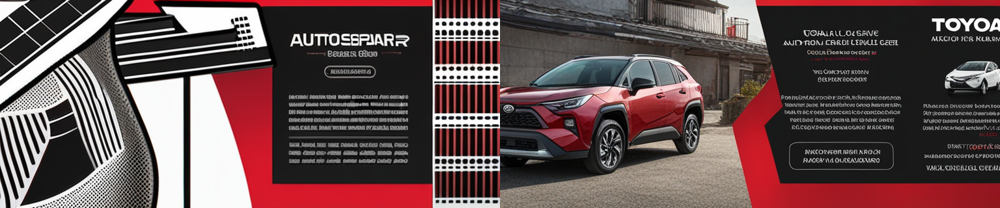
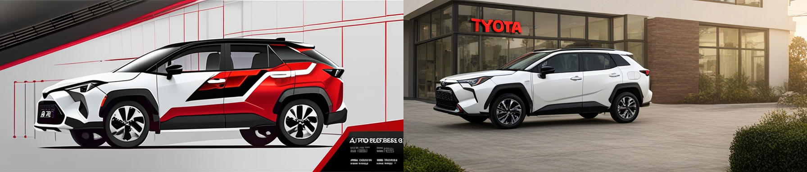
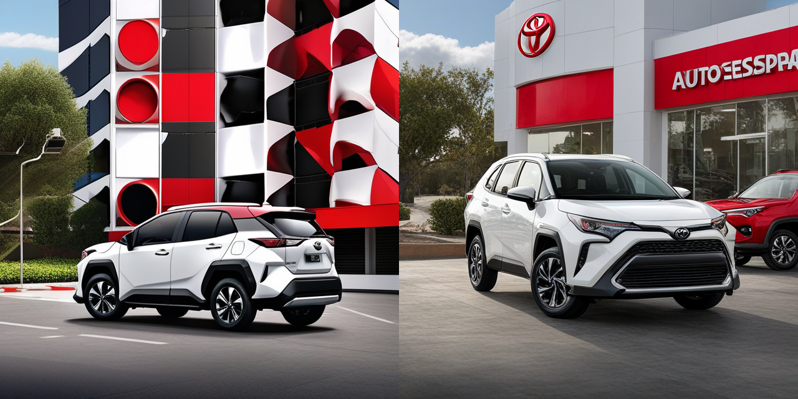
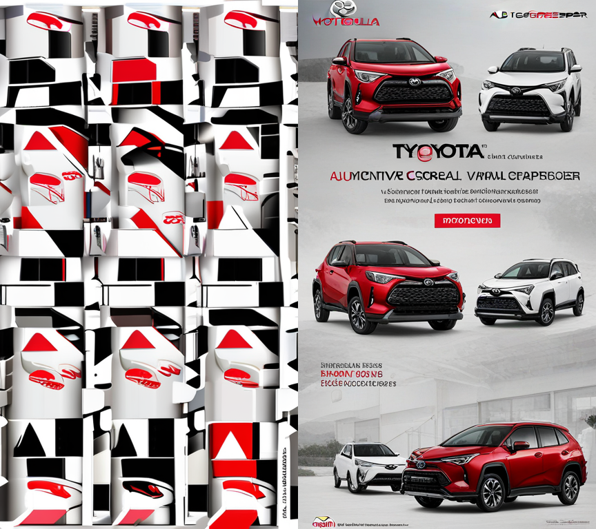
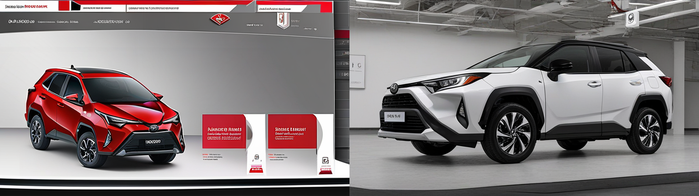

Stable Diffusion LoRA Technical Evaluation Report
Diagnostico tecnico del fine-tuning visual DreamBooth LoRA sobre SDXL para estilo de campanas automotrices AUTOESPAR/TOYOTA. El reporte resume configuracion, captions usadas, artefactos, metricas de generacion y evidencia visual del run almacenado en outputs/stable_diffusion_lora/.
Lectura rapida
Resultado del entrenamiento
El adapter final esta presente en outputs/stable_diffusion_lora/lora_adapter/pytorch_lora_weights.safetensors con tamano 44.5 MB. Tambien hay checkpoints intermedios cada 15 steps.
El entrenamiento guardo el adapter final, pero el proceso fue terminado con SIGKILL durante una carga posterior del pipeline SDXL. Esto se interpreta como presion de memoria de Colab, no como ausencia del adapter.
- Se entreno con 65 imagenes seleccionadas de 154 filas validas.
- Las captions reales de entrenamiento salieron de
training_captiony se escribieron como sidecars.txt. - El prompt comun quedo como fallback, no como fuente principal de captions.
Configuracion clave
| resolution | 512 |
|---|---|
| max_train_steps | 50 |
| rank | 8 |
| learning_rate | 0.0001 |
| batch / accumulation | 1 / 4 |
| mixed_precision | fp16 |
| seed | 3407 |
Metricas agregadas por variante
| variant | images | mean latency | CLIP text-image | max similarity to training set | pairwise similarity | diversity score |
|---|---|---|---|---|---|---|
| base | 6 | 8.40s | 0.239 | 0.667 | 0.631 | 0.369 |
| lora | 6 | 8.86s | 0.246 | 0.695 | 0.761 | 0.239 |
Interpretacion: el LoRA aumenta ligeramente el alineamiento promedio texto-imagen y la cercania visual al set de entrenamiento, pero reduce diversidad intra-variante. Eso es esperable: el adapter aprende un estilo mas especifico y homogeneo.
Metricas por imagen generada
| placement | variant | seed | latency | CLIP text-image | max training similarity | file |
|---|---|---|---|---|---|---|
| dealership_poster | base | 3410 | 11.90s | 0.243 | 0.693 | image |
| dealership_poster | lora | 3410 | 12.24s | 0.224 | 0.698 | image |
| email_header | base | 3412 | 5.57s | 0.264 | 0.572 | image |
| email_header | lora | 3412 | 6.01s | 0.242 | 0.695 | image |
| highway_billboard | base | 3411 | 7.76s | 0.229 | 0.753 | image |
| highway_billboard | lora | 3411 | 8.18s | 0.218 | 0.715 | image |
| instagram_feed | base | 3408 | 9.36s | 0.230 | 0.686 | image |
| instagram_feed | lora | 3408 | 10.27s | 0.260 | 0.674 | image |
| vertical_mobile_ad | base | 3409 | 8.40s | 0.199 | 0.646 | image |
| vertical_mobile_ad | lora | 3409 | 8.46s | 0.318 | 0.728 | image |
| website_hero | base | 3407 | 7.38s | 0.267 | 0.651 | image |
| website_hero | lora | 3407 | 7.98s | 0.214 | 0.659 | image |
{kind=link}
{kind=link}
{kind=link}
{kind=link}
{kind=link}
{kind=link}
{kind=link}
{kind=link}
{kind=link}
{kind=link}
{kind=link}
{kind=link}
Galeria base vs LoRA
Canvases lado a lado generados con el mismo prompt y seed para comparar SDXL base contra SDXL + LoRA.
{kind=link}

{kind=link}

{kind=link}

{kind=link}


{kind=link}



{kind=link}

Prompts de comparacion
| placement | size | seed | prompt |
|---|---|---|---|
| website_hero | 768x432 | 3407 | AUTOESPAR dealership automotive advertisement, TOYOTA Corolla Cross Hybrid Electric 2025, realistic Toyota SUV hero image, clean commercial dealership campaign design, red white and black brand color palette, bold promotional headline blocks, blank Call To Action area, dealership logo placement, Toyota brand badge placement, small unreadable legal footer bar, polished automotive reflections, crisp vehicle proportions, high quality advertising layout, website hero banner, wide 16:9 dealership campaign layout, vehicle centered, clean headline space on the left, Call To Action (CTA) block on the right, clear AUTOESPAR dealership identity, clear TOYOTA brand presence, professional automotive retail campaign |
| instagram_feed | 640x640 | 3408 | AUTOESPAR dealership automotive advertisement, TOYOTA Corolla Cross Hybrid Electric 2025, realistic Toyota SUV hero image, clean commercial dealership campaign design, red white and black brand color palette, bold promotional headline blocks, blank Call To Action area, dealership logo placement, Toyota brand badge placement, small unreadable legal footer bar, polished automotive reflections, crisp vehicle proportions, high quality advertising layout, Instagram feed ad, square social media ad layout, vehicle centered, bold red white black graphic blocks, compact Call To Action area, clear AUTOESPAR dealership identity, clear TOYOTA brand presence, professional automotive retail campaign |
| vertical_mobile_ad | 432x768 | 3409 | AUTOESPAR dealership automotive advertisement, TOYOTA Corolla Cross Hybrid Electric 2025, realistic Toyota SUV hero image, clean commercial dealership campaign design, red white and black brand color palette, bold promotional headline blocks, blank Call To Action area, dealership logo placement, Toyota brand badge placement, small unreadable legal footer bar, polished automotive reflections, crisp vehicle proportions, high quality advertising layout, vertical mobile ad, vertical 9:16 mobile campaign layout, dealership branding at the top, vehicle hero image in the center, legal footer bar at the bottom, clear AUTOESPAR dealership identity, clear TOYOTA brand presence, professional automotive retail campaign |
| dealership_poster | 640x832 | 3410 | AUTOESPAR dealership automotive advertisement, TOYOTA Corolla Cross Hybrid Electric 2025, realistic Toyota SUV hero image, clean commercial dealership campaign design, red white and black brand color palette, bold promotional headline blocks, blank Call To Action area, dealership logo placement, Toyota brand badge placement, small unreadable legal footer bar, polished automotive reflections, crisp vehicle proportions, high quality advertising layout, dealership poster, vertical print poster layout, large vehicle hero image, strong promotional headline block, structured dealership branding, clear AUTOESPAR dealership identity, clear TOYOTA brand presence, professional automotive retail campaign |
| highway_billboard | 896x384 | 3411 | AUTOESPAR dealership automotive advertisement, TOYOTA Corolla Cross Hybrid Electric 2025, realistic Toyota SUV hero image, clean commercial dealership campaign design, red white and black brand color palette, bold promotional headline blocks, blank Call To Action area, dealership logo placement, Toyota brand badge placement, small unreadable legal footer bar, polished automotive reflections, crisp vehicle proportions, high quality advertising layout, highway billboard, ultra wide billboard layout, large vehicle silhouette, short promotional headline block, strong dealership branding, clear AUTOESPAR dealership identity, clear TOYOTA brand presence, professional automotive retail campaign |
| email_header | 768x320 | 3412 | AUTOESPAR dealership automotive advertisement, TOYOTA Corolla Cross Hybrid Electric 2025, realistic Toyota SUV hero image, clean commercial dealership campaign design, red white and black brand color palette, bold promotional headline blocks, blank Call To Action area, dealership logo placement, Toyota brand badge placement, small unreadable legal footer bar, polished automotive reflections, crisp vehicle proportions, high quality advertising layout, email campaign header, wide email header layout, vehicle on the right, clean blank copy area on the left, compact brand strip, clear AUTOESPAR dealership identity, clear TOYOTA brand presence, professional automotive retail campaign |
Dataset y captions de entrenamiento
Resumen
| training captions promedio | 48.02 palabras |
|---|---|
| training caption max | 55 palabras |
| prepared png | 65 |
| prepared txt | 65 |
| checkpoints | 3 |
Extensiones fuente
| extension | count |
|---|---|
| .jpg | 59 |
| .png | 6 |
Hparams registrados
checkpointing_steps: 15 gradient_accumulation_steps: 4 instance_data_dir: /content/dmc-tp3-gen-multimodal/diffusion_lora/prepared_dataset learning_rate: 0.0001 max_train_steps: 50 mixed_precision: fp16 output_dir: /content/dmc-tp3-gen-multimodal/diffusion_lora/training_output pretrained_model_name_or_path: stabilityai/stable-diffusion-xl-base-1.0 rank: 8 resolution: 512 seed: 3407 train_batch_size: 1 train_text_encoder: false
Muestras de captions usadas
| source | prepared image | training_caption |
|---|---|---|
| 1.autoespar_toyota_corolla_cross_2025.jpg | autoespar_001.png | AUTOESPAR dealership automotive advertisement, Toyota Corolla Cross, A banner advertising the Toyota Corolla Cross hybrid electric vehicle, featuring a man walking next to the car in an urban setting, 8 Hybrid, , small unreadable legal footer bar, clean promotional banner layout, vehicle-focused composition, bold red white and black graphic blocks, blank copy area, small unreadable |
| 10.autoespar_ganadores_cuida_tu_toyota_mama.jpg | autoespar_002.png | AUTOESPAR dealership automotive advertisement, Toyota Toyota vehicle, A pink and white banner with a man and woman in a car repair shop, small unreadable legal footer bar, clean promotional banner layout, vehicle-focused composition, bold red white and black graphic blocks, blank copy area, small unreadable legal footer bar, high quality commercial design |
| 11.autoespar_toyota_corolla_cross_outlet_2025.jpg | autoespar_003.png | AUTOESPAR dealership automotive advertisement, Toyota Corolla Cross, A red Toyota Corolla Cross hybrid electric car is displayed in a promotional image for a 2025 model, with a couple standing beside it, The image is a banner-style advertisement for an outlet store, featuring graphic headline blocks, clean promotional banner layout, vehicle-focused composition, bold red white and |
| 12.autoespar_toyota_corolla_cross_feliz_dia_madre.jpg | autoespar_004.png | AUTOESPAR dealership automotive advertisement, Toyota Corolla Cross, A banner-style advertisement for Toyotas Day) campaign, featuring a woman and a child embracing next to a white Toyota Corolla Cross, The image conveys warmth and gratitude, with a sunset backdrop and a message of appreciation for mothers, clean promotional banner layout, vehicle-focused composition, bold red white and |
| 13.autoespar_toyota_yaris_cross_outlet_2025.jpg | autoespar_005.png | AUTOESPAR dealership automotive advertisement, Toyota Yaris Cross, Yaris, A poster for a Toyota Yaris Cross with a man standing next to it, 5 FULL D- LUX, clean promotional banner layout, vehicle-focused composition, bold red white and black graphic blocks, blank copy area, small unreadable legal footer bar, high quality commercial design |
| 14.autoespar_toyota_land_cruiser_prado_outlet.jpg | autoespar_006.png | AUTOESPAR dealership automotive advertisement, Toyota Land Cruiser Prado, A man stands next to a Land Cruiser Prado SUV in a coastal setting, with a banner advertising and in the background, clean promotional banner layout, vehicle-focused composition, bold red white and black graphic blocks, blank copy area, small unreadable legal footer bar, high quality commercial design |
Artefactos principales
| ruta | uso |
|---|---|
outputs/stable_diffusion_lora/lora_adapter/pytorch_lora_weights.safetensors | Adapter LoRA final para cargar sobre SDXL base. |
outputs/stable_diffusion_lora/evaluation/training_config.json | Configuracion del run y evidencia de caption-aware mode. |
outputs/stable_diffusion_lora/evaluation/caption_training_manifest.csv | Trazabilidad imagen fuente -> PNG preparado -> sidecar caption. |
outputs/stable_diffusion_lora/evaluation/base_vs_lora_metrics.csv | Metricas por imagen generada. |
outputs/stable_diffusion_lora/generated/ | Imagenes base, LoRA y canvases comparativos. |
outputs/stable_diffusion_lora/logs/ | Stdout/stderr capturados del entrenamiento. |
Conclusiones tecnicas
- El pipeline caption-aware quedo activo: el entrenamiento uso sidecars
.txtgenerados desdetraining_caption. - La comparacion usa seeds fijos 3407-3412, por lo que base y LoRA son comparables por prompt.
- El LoRA se acerca mas al dominio visual del dataset, con mayor similitud al training set y menor diversidad.
- Para mejorar calidad visual conviene correr un modo mas largo, revisar manualmente outputs y mantener prompts sin texto legible exacto.
- El SIGKILL posterior al guardado sugiere que Colab quedo justo de memoria al recargar SDXL; para nuevas corridas conviene generar en una sesion separada o apagar baseline/FID.